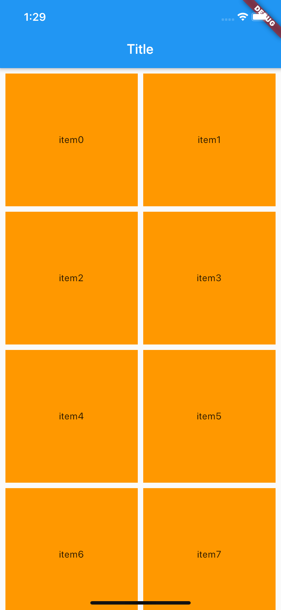
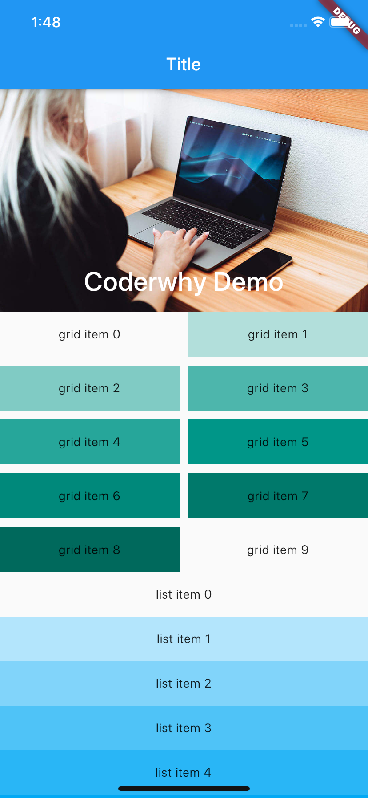
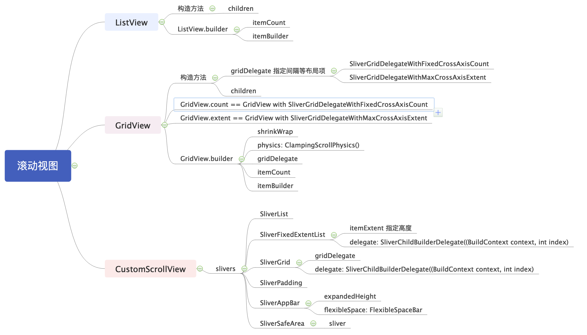

Slivers
考虑一个这样的布局：一个滑动的视图中包括一个标题视图（HeaderView），一个列表视图（ListView），一个网格视图（GridView）, 这种复杂场景可以使用CustomScrollView结合Sliver实现. 在CustomScrollView中，每一个独立的，可滚动的Widget被称之为Sliver
CustomScrollView有一个slivers属性，里面让我们放对应的一些Sliver：
- SliverList：类似于我们之前使用过的ListView；
- SliverFixedExtentList：类似于SliverList，只是可以设置滚动的高度；
- SliverGrid：类似于我们之前使用过的GridView；
- SliverPadding：设置Sliver的内边距，因为可能要单独给Sliver设置内边距；
- SliverAppBar：添加一个AppBar，通常用来作为CustomScrollView的HeaderView；
- SliverSafeArea：设置内容显示在安全区域（比如不让齐刘海挡住我们的内容）
SliverGrid+SliverPadding+SliverSafeArea的组合示例:

import 'dart:convert';
import 'package:flutter/material.dart';
import 'package:flutter/services.dart';
import 'package:hello/Anchor.dart';
void main() => runApp(MyApp());
class MyApp extends StatelessWidget {
// This widget is the root of your application.
@override
Widget build(BuildContext context) {
return MaterialApp(
title: 'Flutter Demo',
color: Colors.white,
home: Scaffold(
appBar: AppBar(
title: Text("Title"),
),
body: MyHomePage(),
)
);
}
}
class MyHomePage extends StatelessWidget {
@override
Widget build(BuildContext context) {
return CustomScrollView(
slivers: <Widget>[
SliverSafeArea(
sliver: SliverPadding(
padding: const EdgeInsets.all(8),
sliver: SliverGrid(
gridDelegate: SliverGridDelegateWithFixedCrossAxisCount(
crossAxisCount: 2,
crossAxisSpacing: 8,
mainAxisSpacing: 8,
),
delegate: SliverChildBuilderDelegate((BuildContext context, int index) {
return Container(
alignment: Alignment(0, 0),
color: Colors.orange,
child: Text("item$index"),
);
},
childCount: 20
),
),
),
),
],
);
}
}
再看一个示例:

import 'package:flutter/material.dart';
void main() => runApp(MyApp());
class MyApp extends StatelessWidget {
// This widget is the root of your application.
@override
Widget build(BuildContext context) {
return MaterialApp(
title: 'Flutter Demo',
color: Colors.white,
home: Scaffold(
appBar: AppBar(
title: Text("Title"),
),
body: MyHomePage(),
)
);
}
}
class MyHomePage extends StatelessWidget {
@override
Widget build(BuildContext context) {
return showCustomScrollView();
}
Widget showCustomScrollView() {
return new CustomScrollView(
slivers: <Widget>[
const SliverAppBar(
expandedHeight: 250,
flexibleSpace: FlexibleSpaceBar(
title: Text('Coderwhy Demo'),
background: Image(
image: NetworkImage("https://tva1.sinaimg.cn/large/006y8mN6gy1g72j6nk1d4j30u00k0n0j.jpg"),
fit: BoxFit.cover,
),
),
),
new SliverGrid(
gridDelegate: new SliverGridDelegateWithMaxCrossAxisExtent(
maxCrossAxisExtent: 200.0,
mainAxisSpacing: 10.0,
crossAxisSpacing: 10.0,
childAspectRatio: 4.0
),
delegate: new SliverChildBuilderDelegate((BuildContext context, int index) {
return new Container(
alignment: Alignment.center,
color: Colors.teal[100 * (index % 9)],
child: Text('grid item $index'),
);
}, childCount: 10),
),
SliverFixedExtentList(
itemExtent: 50, // 高
delegate: SliverChildBuilderDelegate((BuildContext context, int index) {
return Container(
alignment: Alignment.center,
color: Colors.lightBlue[100 * (index % 9)],
child: new Text('list item $index'),
);
}, childCount: 20),
),
],
);
}
}
导图:
